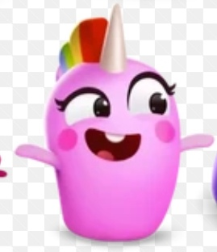

Sugar
Moosey
Yeyet
Dot
Squeak
Blinky
Flip
Gus
Yükleniyor...

Duygu: Normal 🙂
Mutluluk: 80%
💬 Karakterle Konuş (6 Soru)
❤️ Neleri Seversin?
❌ Neleri Sevmezsin?
🌟 En Sevdiğin Şey?
💀 En Sevmediğin Şey?
🤝 En Yakın Arkadaşın?
✨ Kendini Tanıtır Mısın?
🎁 Eşya / Durum Gönder
🍭 P.Şeker
🍫 Çikolata
🧇 Gofret
🥛 Süt
🍦 Dondurma
😊 Emoji
🚀 Uzay
🍏 Elma
🍇 Üzüm
🧸 Oyuncak
🐯 Kaplan
🦝 Rakun
🐱 Kedi
🌧️ Yağmur
🖤 Karanlık
🧪 Parfüm